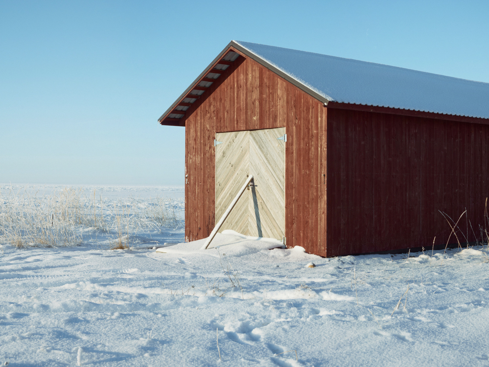

Buildings / Kiehtovat rakennukset
Construction has changed a great deal in recent decades. I have always been fascinated by older and more detailed buildings—where one can still find the fine craftsmanship and spirit of the past.
Rakentaminen on muuttunut viime vuosikymmeninä paljon. Minua on aina kiehtonut vanhemmat ykityiskohtaisemmat rakennukset.

Cows' Home / Lehmien koti
Suomussalmi, Finland 2026

Red and Blue / Punainen ja sininen
Kalajoki, Finland 2026

Lighthouse / Majakka
Hailuoto, Finland 2025